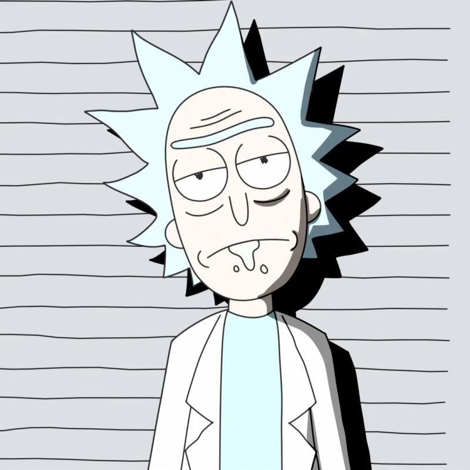
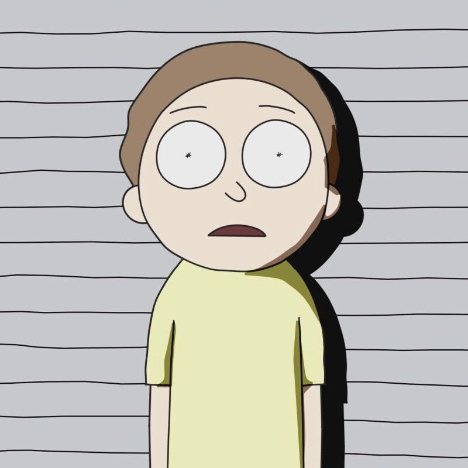
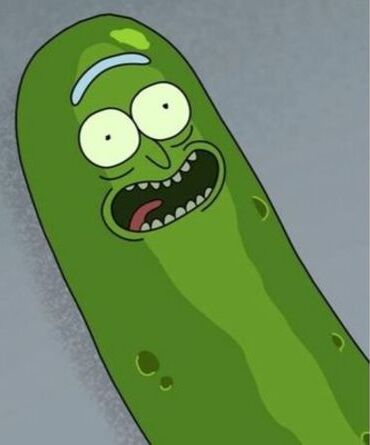
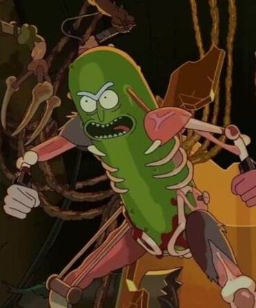

Rick C-137 is a sociopathic mad scientist who seems to know everything in the universe and thus finds life a traumatizing and pointless experience. Following the murder of his wife Diane and daughter Beth Sanchez in his native reality (C-137) by his parallel self Rick Prime, Rick dedicates his life to hunting Prime down, developing inter-dimensional travel and building a wall around the segment of the multiverse where Rick is "The Smartest Man in the Universe", dubbed the Central Finite Curve, to narrow his search, massacring countless alternate versions of himself in the process of hunting down Prime before resigning himself to failure, founding the Citadel of Ricks out of the survivors, and retiring to move in with the family of an adult version of Beth Smith from Prime's own native reality (whom Prime had abandoned when Beth was a teenager) out of the slim hope of Prime one day returning so Rick could complete his vendetta, consisting of his son-in-law Jerry and teenage grandchildren Summer and Morty Smith.

Although initially referring to himself as "Morty C-137" in reference to the designation given to his grandfather by the Trans-Dimensional Council of Ricks, in reference to Rick's original universe, "C-137", in "Rickmurai Jack", Rick is revealed to not be Morty's original Rick, with Morty's true reality designation, Morty Prime, being revealed in the audio commentary for "Solaricks". Book 1 of the Rick and Morty comic series (comprising the first two volumes of the series) follows the Rick and Morty of Dimension C-132 while most issues of subsequent installments follow the Rick (C-137) and Morty (Prime) of the television series; the video game Pocket Mortys follows the Rick and Morty of Dimension C-123, while various other Mortys are the focus of episodes set in the inter-dimensional Citadel of Ricks and Mortys, ruled by President Morty, who was colloquially known as "Evil Morty" among fans and the media until the series' fifth season, where this name was briefly officially adopted. President Morty has received a positive critical reception, praised for his iconic mind control eyepatch and outwardly calm and understanding, yet inwardly cunning and ruthless demeanor.

As Beth, Morty, and Summer prepare for family counseling, Rick informs Morty that he cannot go, having turned himself into a pickle. He denies that he timed the experiment to avoid the counseling session, but the family notices a telltale mechanism rigged to drop a syringe in him soon after they leave. Beth takes the syringe, leaving Rick alone on his workbench. Rick is knocked off the bench by a cat and then washed into the sewer during a rain shower. Lacking any means of mobility, he bites the head of a cockroach and walks upon its back by stimulating its brain with his tongue. After assembling more cockroaches into a crude exoskeleton, he sets up a lab and upgrades to a powered exoskeleton made of rat corpses.
